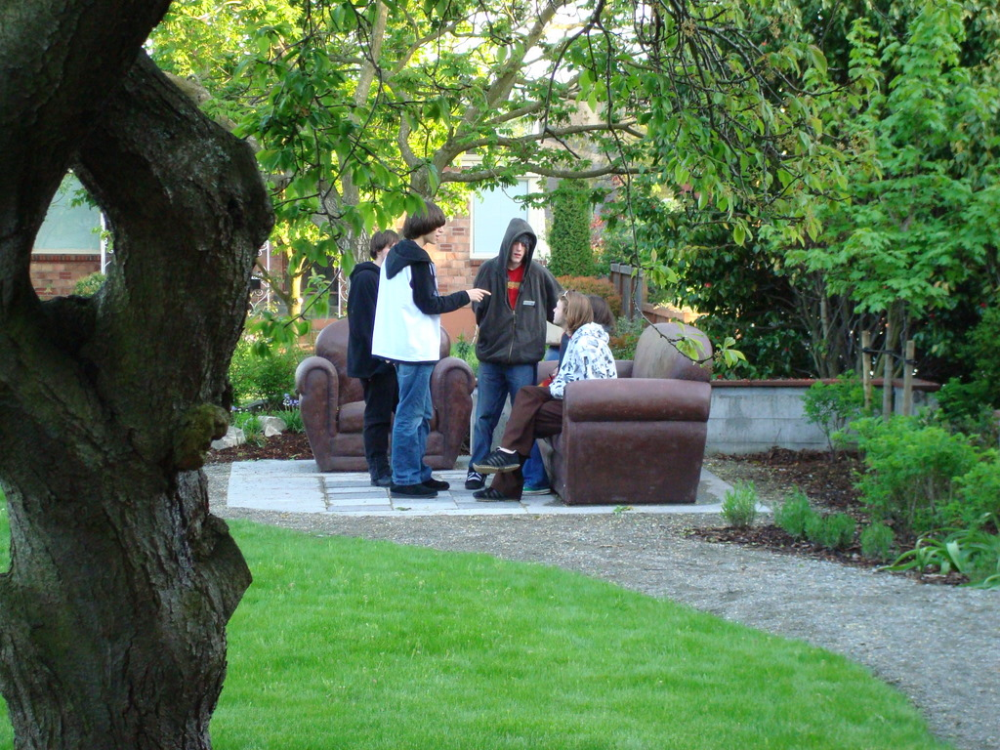

<?xml version="1.0" encoding="UTF-8"?><rss version="2.0"
	xmlns:content="http://purl.org/rss/1.0/modules/content/"
	xmlns:wfw="http://wellformedweb.org/CommentAPI/"
	xmlns:dc="http://purl.org/dc/elements/1.1/"
	xmlns:atom="http://www.w3.org/2005/Atom"
	xmlns:sy="http://purl.org/rss/1.0/modules/syndication/"
	xmlns:slash="http://purl.org/rss/1.0/modules/slash/"
	>

<channel>
	<title>News &#8211; Friends of Ballard Corners Park</title>
	<atom:link href="http://ballardcornerspark.org/ballardcornerspark/category/news/feed/" rel="self" type="application/rss+xml" />
	<link>http://ballardcornerspark.org/ballardcornerspark</link>
	<description>Just another WordPress weblog</description>
	<lastBuildDate>Tue, 12 Apr 2016 16:55:53 +0000</lastBuildDate>
	<language>en-US</language>
	<sy:updatePeriod>hourly</sy:updatePeriod>
	<sy:updateFrequency>1</sy:updateFrequency>
	<generator>https://wordpress.org/?v=4.7.2</generator>
	<item>
		<title>Highlighting the Park</title>
		<link>http://ballardcornerspark.org/ballardcornerspark/2011/06/highlighting-the-park/</link>
		<pubDate>Fri, 03 Jun 2011 02:07:24 +0000</pubDate>
		<dc:creator><![CDATA[David Folweiler]]></dc:creator>
				<category><![CDATA[Design]]></category>
		<category><![CDATA[Meetings]]></category>
		<category><![CDATA[News]]></category>

		<guid isPermaLink="false">http://ballardcornerspark.org/ballardcornerspark/?p=1285</guid>
		<description><![CDATA[I went to a City Council committee meeting today.  They highlight a park each month and this month it was our turn.  You can watch the meeting on the Seattle Channel. My presentation is at about 2:15. Seattle Channel Video can be played in Flash Player 9 and up]]></description>
				<content:encoded><![CDATA[<p>I went to a City Council committee meeting today.  They highlight a park each month and this month it was our turn.  You can watch the meeting on the Seattle Channel.</p>
<p>My presentation is at about 2:15.</p>
<p><object id="scPlayer" classid="clsid:d27cdb6e-ae6d-11cf-96b8-444553540000" width="480" height="380" codebase="http://download.macromedia.com/pub/shockwave/cabs/flash/swflash.cab#version=6,0,40,0"><param name="name" value="scPlayer" /><param name="src" value="http://www.seattlechannel.org/videos/player5.swf?config=http://www.seattlechannel.org/videos/videoConfig.asp?ID=2051141&amp;plugins=http://www.seattlechannel.org/videos/swfobject/gapro.swf&amp;gapro.accountid=UA-22358727-1" /><param name="allowfullscreen" value="true" /><param name="allowscriptaccess" value="always" /><embed id="scPlayer" type="application/x-shockwave-flash" width="480" height="380" src="http://www.seattlechannel.org/videos/player5.swf?config=http://www.seattlechannel.org/videos/videoConfig.asp?ID=2051141&amp;plugins=http://www.seattlechannel.org/videos/swfobject/gapro.swf&amp;gapro.accountid=UA-22358727-1" allowscriptaccess="always" allowfullscreen="true" name="scPlayer"></embed></object></p>
<div style="font-family:arial,verdana;font-size:smaller;"><a href="http://www.seattlechannel.org">Seattle Channel Video</a> can be played in <strong><a href="http://www.adobe.com/go/getflashplayer">Flash Player 9 and up</a></strong></div>
]]></content:encoded>
			</item>
		<item>
		<title>Ballard News Tribune Photos of the Easter Egg Hunt</title>
		<link>http://ballardcornerspark.org/ballardcornerspark/2010/04/ballard-news-tribune-photos-of-the-easter-egg-hunt/</link>
		<pubDate>Tue, 06 Apr 2010 00:07:04 +0000</pubDate>
		<dc:creator><![CDATA[David Folweiler]]></dc:creator>
				<category><![CDATA[Events]]></category>
		<category><![CDATA[News]]></category>

		<guid isPermaLink="false">http://ballardcornerspark.org/ballardcornerspark/?p=1032</guid>
		<description><![CDATA[Our local newspaper, the Ballard News Tribune, posted some photos of yesterday&#8217;s hunt.]]></description>
				<content:encoded><![CDATA[<p>Our local newspaper, the Ballard News Tribune, posted <a title="BNT photos of the hunt" href="http://www.ballardnewstribune.com/2010/04/04/features/ballard-big-picture-egg-hunting-ballard-corners" target="_blank">some photos of yesterday&#8217;s hunt</a>.</p>
]]></content:encoded>
			</item>
		<item>
		<title>We&#8217;re official &#8211; Grand Opening &#8211; we&#8217;re open!</title>
		<link>http://ballardcornerspark.org/ballardcornerspark/2009/10/were-official-grand-opening-were-open/</link>
		<pubDate>Sun, 11 Oct 2009 04:36:36 +0000</pubDate>
		<dc:creator><![CDATA[gordon]]></dc:creator>
				<category><![CDATA[Current State]]></category>
		<category><![CDATA[Fundraising]]></category>
		<category><![CDATA[History]]></category>
		<category><![CDATA[Mentioned elsewhere]]></category>
		<category><![CDATA[News]]></category>

		<guid isPermaLink="false">http://ballardcornerspark.org/ballardcornerspark/?p=861</guid>
		<description><![CDATA[Today was the Grand Opening at the park. We had an extremely large turnout, the full stack of US governance from community to city to state to the Senator, and there were many thanks all round. Thanks to the supporters on the day, with a special thanks from my belly to Veraci Pizza who served [&#8230;]]]></description>
				<content:encoded><![CDATA[<p>Today was the Grand Opening at the park.</p>
<p>We had an extremely large turnout, the full stack of US governance from community to city to state to the Senator, and there were many thanks all round.</p>
<p>Thanks to the supporters on the day, with a special thanks from my belly to <a href="http://www.veracipizza.com/">Veraci Pizza</a> who served free pizza for an hour and a half to a very happy line of pizza-lovers.</p>
<p>More pictures will be posted forthwith, but for now feel free to read the timely report on <a href="http://www.myballard.com/2009/10/10/ballards-newest-park-officially-opens/">myballard</a>.</p>
]]></content:encoded>
			</item>
		<item>
		<title>DJC article</title>
		<link>http://ballardcornerspark.org/ballardcornerspark/2009/10/djc-article/</link>
		<pubDate>Tue, 06 Oct 2009 19:02:35 +0000</pubDate>
		<dc:creator><![CDATA[David Folweiler]]></dc:creator>
				<category><![CDATA[Mentioned elsewhere]]></category>
		<category><![CDATA[News]]></category>

		<guid isPermaLink="false">http://ballardcornerspark.org/ballardcornerspark/?p=857</guid>
		<description><![CDATA[We had a great front page article in the Daily Journal of Commerce yesterday, using this picture.]]></description>
				<content:encoded><![CDATA[<p>We had a great <a title="DJC article" href="../../../../Documents/DJC&#32;100509.pdf.html" target="_blank">front page article</a> in the Daily Journal of Commerce yesterday, using this picture.</p>
<p><a href="http://www.djc.com/news/ae/12010726.html" target="_blank"></a></p>
]]></content:encoded>
			</item>
		<item>
		<title>Grand Opening Gala on 10/10 at 11!</title>
		<link>http://ballardcornerspark.org/ballardcornerspark/2009/09/grand-opening-gala-on-1010-at-11/</link>
		<comments>http://ballardcornerspark.org/ballardcornerspark/2009/09/grand-opening-gala-on-1010-at-11/#comments</comments>
		<pubDate>Wed, 02 Sep 2009 17:52:41 +0000</pubDate>
		<dc:creator><![CDATA[David Folweiler]]></dc:creator>
				<category><![CDATA[Events]]></category>
		<category><![CDATA[News]]></category>

		<guid isPermaLink="false">http://ballardcornerspark.org/ballardcornerspark/?p=779</guid>
		<description><![CDATA[Gabriella Moller talked to one of her neighbors about catering our Grand Opening.  Errin Byrd Jett and Marshall Jett are owners of Veraci Pizza.  They have agreed to bring an oven to the park on our Grand Opening and make pizza for all! They have offered to donate their time and materials. We are really [&#8230;]]]></description>
				<content:encoded><![CDATA[<p>Gabriella Moller talked to one of her neighbors about catering our Grand Opening.  Errin Byrd Jett and Marshall Jett are owners of Veraci Pizza.  They have agreed to bring an oven to the park on our Grand Opening and make pizza for all!  They have offered to donate their time and materials.  We are really excited about this!</p>
<p>The only weekend date in the next few months that Veraci has available is Saturday, October 10th.  Therefore, our Grand Opening will be October 10th.  We’ll start around 11 AM.  I’ve invited Seattle Parks Superintendent Tim Gallagher, State Senator Jeanne Kohl-Welles, Seattle Department of Neighborhoods Director Stella Chou, and King County Councilmember Larry Phillips to speak.</p>
<p>Groundswell NW will be joining us to celebrate 20 years of creating parks and open space in Ballard.  We will be lauding their efforts as it was Groundswell NW that had the idea of creating Ballard Corners Park and started the development process.</p>
<p>Save the date!  Free Veraci Pizza!</p>
]]></content:encoded>
			<wfw:commentRss>http://ballardcornerspark.org/ballardcornerspark/2009/09/grand-opening-gala-on-1010-at-11/feed/</wfw:commentRss>
		<slash:comments>1</slash:comments>
		</item>
		<item>
		<title>a nice mention in another blog</title>
		<link>http://ballardcornerspark.org/ballardcornerspark/2009/09/a-nice-mention-in-another-blog/</link>
		<pubDate>Wed, 02 Sep 2009 16:43:01 +0000</pubDate>
		<dc:creator><![CDATA[David Folweiler]]></dc:creator>
				<category><![CDATA[News]]></category>

		<guid isPermaLink="false">http://ballardcornerspark.org/ballardcornerspark/?p=777</guid>
		<description><![CDATA[Danika turned me onto this.  We got a nice mention in Seattle Daily Photo.]]></description>
				<content:encoded><![CDATA[<p>Danika turned me onto this.  We got a nice mention in <a title="Seattle Daily Photo" href="http://seattle-daily-photo.blogspot.com/2009/09/iphone-wednesday-7-comfy-couch.html" target="_blank">Seattle Daily Photo</a>.</p>
]]></content:encoded>
			</item>
		<item>
		<title>Article in BNT about the newly opened park</title>
		<link>http://ballardcornerspark.org/ballardcornerspark/2009/05/article-in-bnt-about-the-newly-opened-park/</link>
		<pubDate>Fri, 29 May 2009 17:23:03 +0000</pubDate>
		<dc:creator><![CDATA[David Folweiler]]></dc:creator>
				<category><![CDATA[News]]></category>

		<guid isPermaLink="false">http://ballardcornerspark.org/ballardcornerspark/?p=717</guid>
		<description><![CDATA[We received some press this week.  Brian LeBlanc did a piece in the Ballard News Tribune.]]></description>
				<content:encoded><![CDATA[<p>We received some press this week.  Brian LeBlanc did <a title="Brian LeBlanc's article about the park" href="http://www.ballardnewstribune.com/2009/05/28/features/21st-century-viking-corners-park-model-neighborhoods" target="_blank">a piece in the Ballard News Tribune</a>.</p>
]]></content:encoded>
			</item>
		<item>
		<title>Coverage from a journalism student</title>
		<link>http://ballardcornerspark.org/ballardcornerspark/2009/05/coverage-from-a-journalism-student/</link>
		<pubDate>Wed, 13 May 2009 17:22:30 +0000</pubDate>
		<dc:creator><![CDATA[David Folweiler]]></dc:creator>
				<category><![CDATA[News]]></category>

		<guid isPermaLink="false">http://ballardcornerspark.org/ballardcornerspark/?p=697</guid>
		<description><![CDATA[A young woman by the name of Katie Killeen recently blogged about us as part of a journalism class.  Free press is always good!]]></description>
				<content:encoded><![CDATA[<p>A young woman by the name of Katie Killeen recently <a title="Katie's blog post about Ballard Corners Park" href="http://blogsonballard.blogspot.com/2009/05/are-those-couches-real.html" target="_blank">blogged about us</a> as part of a journalism class.  Free press is always good!</p>
]]></content:encoded>
			</item>
		<item>
		<title>The fence is down!</title>
		<link>http://ballardcornerspark.org/ballardcornerspark/2009/05/the-fence-is-down/</link>
		<pubDate>Wed, 06 May 2009 05:02:49 +0000</pubDate>
		<dc:creator><![CDATA[David Folweiler]]></dc:creator>
				<category><![CDATA[construction]]></category>
		<category><![CDATA[Events]]></category>
		<category><![CDATA[News]]></category>

		<guid isPermaLink="false">http://ballardcornerspark.org/ballardcornerspark/?p=666</guid>
		<description><![CDATA[Today is a great day!  The construction fence came down! The park is now open for use.]]></description>
				<content:encoded><![CDATA[<p>Today is a great day!  The construction fence came down!</p>
<p>The park is now open for use.</p>
<div id="attachment_673" style="width: 510px" class="wp-caption alignnone"><a href="../../../wp-content/uploads/2009/05/dsc04843.jpg"></a><p class="wp-caption-text">teenagers hang in the new living room</p></div>
<p><span id="more-666"></span></p>
<div id="attachment_668" style="width: 510px" class="wp-caption alignnone"><a href="../../../wp-content/uploads/2009/05/dsc04838.jpg"></a><p class="wp-caption-text">no fence!</p></div>
<div id="attachment_669" style="width: 510px" class="wp-caption alignnone"><a href="../../../wp-content/uploads/2009/05/dsc04839.jpg"></a><p class="wp-caption-text">storm water collecting in the raingarden after an inch and half of rain (notice the “bathtub ring” of cherry flower petals)</p></div>
<div id="attachment_670" style="width: 510px" class="wp-caption alignnone"><a href="../../../wp-content/uploads/2009/05/dsc04840.jpg"></a><p class="wp-caption-text">the &quot;living room&quot;</p></div>
<div id="attachment_672" style="width: 510px" class="wp-caption alignnone"><a href="../../../wp-content/uploads/2009/05/dsc04842.jpg"></a><p class="wp-caption-text">kids playing on the new play structure</p></div>
]]></content:encoded>
			</item>
		<item>
		<title>Big green park in Ballard!</title>
		<link>http://ballardcornerspark.org/ballardcornerspark/2009/04/big-green-park-in-ballard/</link>
		<pubDate>Sat, 25 Apr 2009 15:38:52 +0000</pubDate>
		<dc:creator><![CDATA[gordon]]></dc:creator>
				<category><![CDATA[construction]]></category>
		<category><![CDATA[Misc.]]></category>
		<category><![CDATA[News]]></category>

		<guid isPermaLink="false">http://ballardcornerspark.org/ballardcornerspark/index.php/2009/04/25/big-green-park-in-ballard/</guid>
		<description><![CDATA[Big green park in Ballard! Uploaded to flickr by: machaggis. Wow, this park needs a haircut. Two more mowings before we can consider using it. I was in taking some photos for possible inclusion in a Groundswell NW poster, and there are a few places where the lawn needs some love, although at first glance [&#8230;]]]></description>
				<content:encoded><![CDATA[<p align="center">
<a href="http://www.flickr.com/photos/machaggis/3472896205/" title="a photo from flickr for ballardcornerspark.org"></a><br />
<br />
 <span style="font-size: 0.9em; margin-top: 0px;"><br />
  <a href="http://www.flickr.com/photos/machaggis/3472896205/">Big green park in Ballard!</a><br />
  <br />
  Uploaded to flickr by: <a href="http://www.flickr.com/people/machaggis/">machaggis</a>.<br />
 </span>
</p>
<p align="center">
Wow, this park needs a haircut.<br />
Two more mowings before we can consider using it.  I was in <a href="http://www.flickr.com/photos/machaggis/sets/72157617302959244/">taking some photos</a> for possible inclusion in a <a href="http://www.groundswellnw.org/">Groundswell NW</a> poster, and there are a few places where the lawn needs some love, although at first glance &#8211; it all looks great!</p>
]]></content:encoded>
			</item>
	</channel>
</rss>
